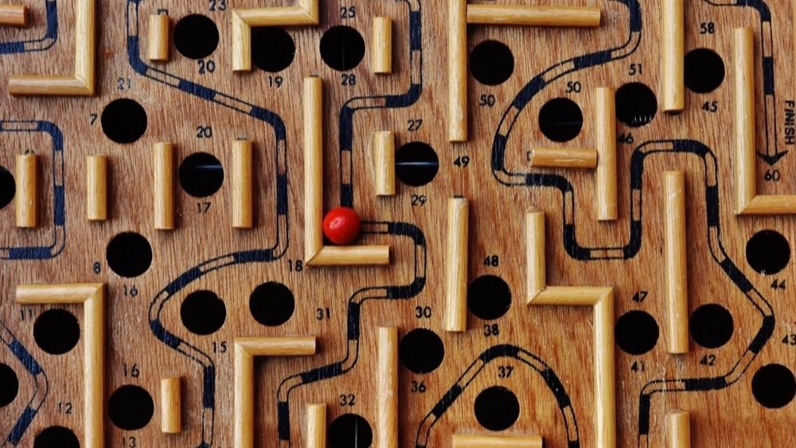

國小升國一的落差，通常不只是內容變難，而是有三件事同時發生：科目從四科變八科以上、 老師從「教到你會」變成「講完進度」、考試從「單元結束才考」變成「每天都考」。 所以真正缺的往往不只是讀書時間，而是當天消化的機制。
圖片：Book Interior — Candace McDaniel／StockSnap · CC0 公眾領域
作業量每天不一樣，固定時段的計畫表第一天就會破功。改成固定順序加上不能談判的 熄燈時間，並且把休閒排在放學後——那是唯一不受作業量影響的時段。
閱讀全文 →不是「作業」和「複習」兩件事。作業本身已經包含複習，只差一個確認自己懂不懂的 小動作。晚上的六個執行步驟，以及一份可以勾選的今晚清單。
閱讀全文 →「量多」和「不會寫」要分開處理，否則查資源的時間會吃掉寫作業的時間。 開工前先把作業分成三堆，並給補觀念一個三十分鐘的硬上限。
閱讀全文 →分界線不是「文科 vs 理科」。問一句「這科今天不懂，會不會害到下個月」就能分出 債務型和累積型——兩者的處理方式、時間投入和段考策略完全不同。
閱讀全文 →這不是在做筆記，是在檢查「我剛剛有沒有真的在聽」。寫不出來的那一節就是今天的洞。 三階段教法、句型模板，以及家長該怎麼「不檢查」。
閱讀全文 →小考的本質是記憶的即時提取，策略跟段考完全不同。只讀範圍、主動回想、 錯題本極簡化，還有 CP 值最高的下課十分鐘。
閱讀全文 →用法比選擇更重要：當天卡住、當天晚上看十分鐘那一個觀念就好。均一、學習吧、 PaGamO 的分工，以及為什麼不建議拍照解題 App。
閱讀全文 →什麼時候該調整方法，什麼時候該求助。C 堆連續一週超過三題代表什麼、 每天寫到十一點代表什麼，以及三個容易搞錯的提醒。
閱讀全文 →
這一篇不用讀，用玩的。七道關卡就是一個晚上會遇到的七個決定—— 點下去看看自己的直覺對不對，順便把前面七篇走一遍。
開始闖關 →